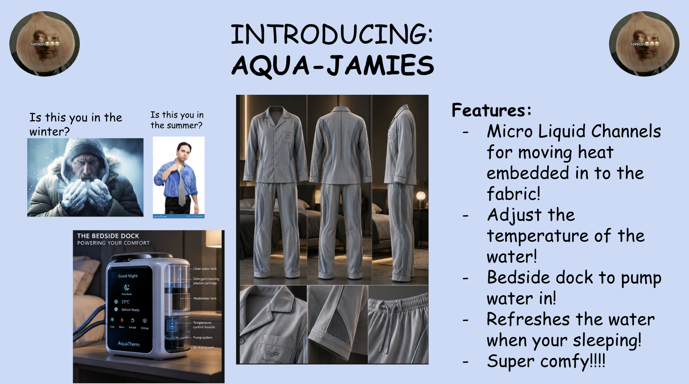

For this activity, we drew two cards, one was an object, the other was a description of what the object had to function as. The cards we drew were pajamas and wet. My group decided to create temperature regulating pjs with a water cooling and heating system, inspired by the IPhone. We used GenAI to create the image of our product, and had some fun with creating the slide. We also included a dock that you could plug the pjs into to change out the water to ensure it stays clean.